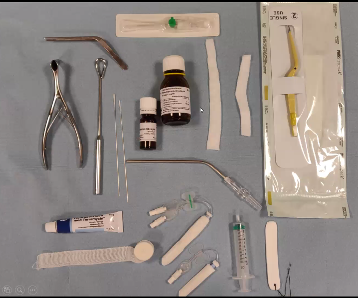
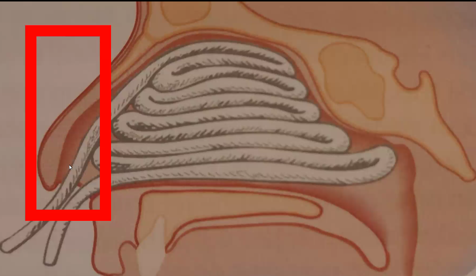
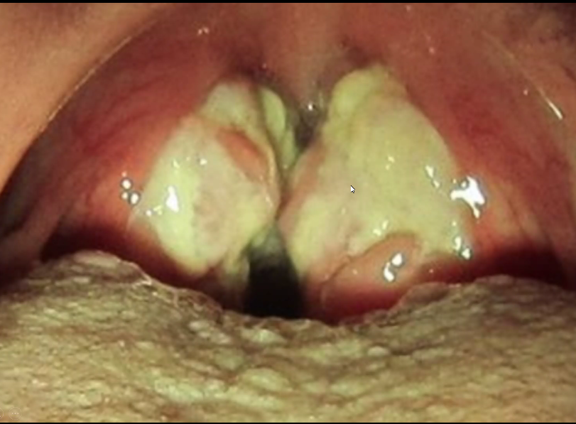
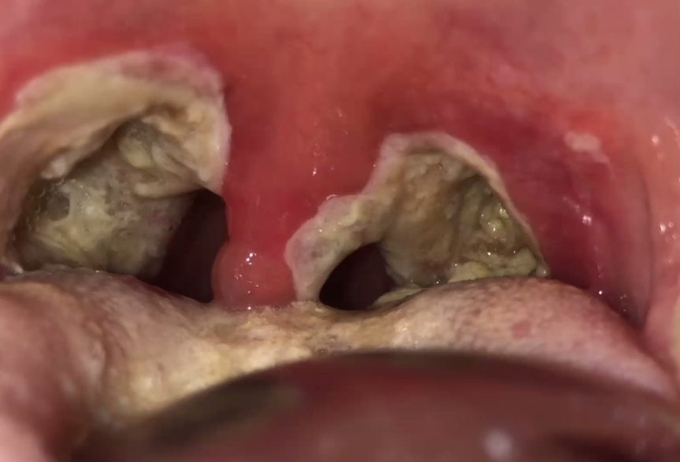
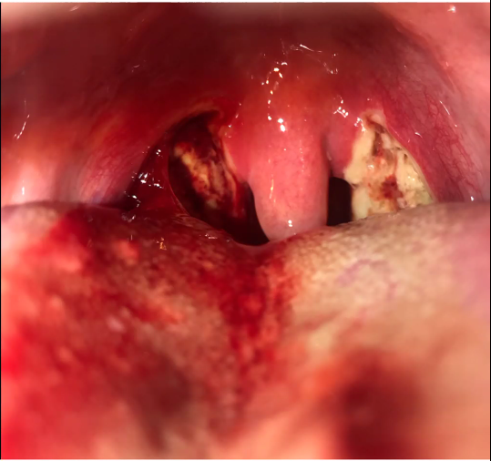
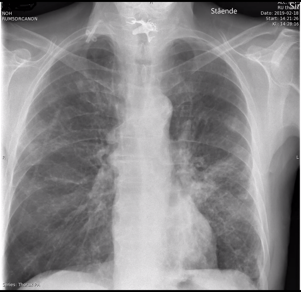

Øre-næse-hals.
Velkommen
- Gitte er ved mikrofonen
- Køge-overlægen
- ØNH
- ENT er på kald mange steder, så der kan gå 30 min
ØNH
- Luftveje det går vi op i.
- Fri luftveje.
- Et A-problem kan skyldes mange ting
- Kig og tal, så er A-vurderet.
Næseblødning. POLL nr. 1
- Hvordan stopper du bedst voldsom næseblødning?
- Beder pt læne hovedet tilbage og presse på næsen — 17%
- Får pt ned at ligge og giver is i munden 19%
- Oprenser næsehulen grundigt og detumescerer 32%
- Detumescerer?
- Sætter næseklemme på og afventer effekt af dette — 31%
- NEJ DET MÅ MAN IKKE!
Casen først.
- 87-årig mand indbringes akut med næseblødning.
- Har småblødt fra venstre næsebor i de seneste 3 dage.
- Nu kraftig blødning — fra begge næsebor
- Er vågen og klar, let svedende, lidt bleg og ængstelig. BT 130/85, p. 120
- Hvad gør I?
- ABCDE
- BT er fint, puls er høj?
- Hæmodynamisk okay?
- BAS type?
- Rapid-Rhino?
- Medicinliste
- Blodfortynddede
- Op at sidde, læne forover, så det ikke løber ned i luftveje
- Ældre slimhinder er tørre.
- ABCDE
- Ad blod fra begge næsebor
- Det kan løbe bagom nu der er så meget.
Case next step
- Midt i at I står og prøver at skabe hæmostase, besvimer pt
- A: Fri vejrtrækning
- B: RF 15 sat 95%
- C: 90/60 p 120, bleg, klamt svedende
- Hvad nu?
- HJÆÆÆLP!
- Bagvagt
- Intensiv.
- Trendelejenburg?
- Besvimet patient siddende? Hmm, det er svært.
- Blodtab
- IV-adgang!
- Blod erstattes med blod
- Væske - lille bolus?
- Tranexamsyre!
- Detumescerende?
- Reverterer/antidot AK-behandling?
- INR? Pauserer marevan hvis skæv
- Dan: HAN SKAL REVERTERES! DET SIGER JAKOB I MORGEN. /Dan, over and out.
- HJÆÆÆLP!
figs/ent_noseble.png
Beskyttelse med briller og alles (se slide med cool bilelder.)
 16-06-2020 13:41
Næsens blodforsyning
- Rigelig og masser af arterier, så tit arteriel
- Locus kieselbachi
- Ofte her det bløder fra
- Læg meshen på begge sider
- Hvis det begynder at bløde, så skifter I den

- Man skal godt ind i bunden af næsen. Man propper åbenbart bare ind.
- Ætse
- Tamponade, så maser man lidt til
- RhinoRapid
- Blæses op med luft.
- Ligge i vand i lille minut.
- Tamponade el. meshe skal fastgøres på kinden og journalføres!
- Mange af dem kan godt gå hjem igen
- Informeres om at tage den med ro.
- Hvis tamponade glider bagtil, skal de trække den ud
Næseblod på traumatisk basis + otohæmatom.
- Septumhæmatom skal udelukkes
- og journalføres (naturligvis!)
- Kan medføre saddelnæse
- Epistaxis hos traume
- Så skal man lige tænke sig om inden man instrumenterer
- Otohæmatom skal også skæres i..
- Vi skal bare konstarerer det og ringe efter ørelægen!
Næsefraktur
- Henvises til ØNH og ses indenfor et par dage.
Case 2
- 23-årig mand henvender sig i akutmodtagelsen og klager over kraftige synkesmerter opstået igår.
- Egen læge har podet — Strep A neg.
- Er moderat smerteforpint men gaber frit. Palpabel, øm adenit subangulært bilat.
- BT 135/80 puls 95, Tp 39,0, leuko 17, CRP 35
POLL
- Hvad er den mest sandsynlige diagnose? * Akut tonsillit 44% * Peritonsillær abcess 23% * Mononukleose 33% * Tandabcess: 0%
- CENTOR-kriterier
- 2-4 af disse medfører
- Akut tonsillit der skal AB-behandles.
- Skal i hvert fald have smertestillende.
Case 3
- 25-årig mand har i den sidste uges tid haft ondt i halsen og febrilia omkring 39
- Egen læge podet — neg. Strep A test
- Siden i går tiltagende smerter primært i højre side, trækker op i øret, svært ved at gabe op, spist og drukket sparsomt grundet kraftige synkesmerter, grødet tale - ”kartoffeltale”. Massiv, øm lymfadenit, især på hø side.
- BT 120/80 puls 100 Tp 39.5
- RF =20
- Diagnose: Peritonsillær abcess
- Hvordan kommer vi videre
- Henvises akut til øre-næse-hals-læge eller sygehus ved mistanke om peritonsillær absces
- Væskebehandling?
- Lidt AB?
- Pencillin.
- Det er en truet luftvej! *
Mononukleose

- De lugter meget specielt.
Efter tonsillectomy.

Bare så I ved hvad det ser ud.
Case 4

- 34 årig mand fik fjernet mandler for 6 dage siden, har haft voldsom blødning per os i hjemmet, mener han har blødt 2 kopfulde
- Lidt bleg, angiver smerter i halsen, afebril, blødning stilnet af, men kvittere fortsat blod per os.
- BT 140/80 p 120
- Kalde hjælp.
- ABCDE
- IV-adgange
- med lidt væske indtil der kommer blod.
- BAS / type
- tranexamsyre?
- A-pkt
- Suge? Nej, det er nok farligt.
- Kalde anæstesien?
- Foroverbøjet.
- Mange behøver ikke GA nødvendigvis.
- Dan siger denne patient kører direkte til ØNH-afd i RegH, Midt og evt. SJ.
- Så det kommer nok ikke til eksamenen.
Forsat..
Kvitterer pludselig kæmpe sortfarvet opkastning, hvorefter han atter spytter blod op. Bløder atter voldsomt fra munden.
- BT 90/60 p. 140
- Kold og klamtsvedende
- Hvad stiller du op?
- Væske.
- Sige de skal løbe
- Han skal bare have blod.
- Mere tranexamsyre?
- Tage vat på en peang med vat med Lidokain/adrenalin. Komprimere..
- Hvis ØNH ikke er i nærheden
- Intuber, og pak masser af gase ned omkring.
Larynx
- Hvad skal du mistænke, hvis pt præsenterer sig med stridorøs vejrtrækning?
Case 5
- 23-årig mand indbringes til AMA
- Kraftige synkesmerter, spisevægring, spytflåd, høj feber og medtaget almentilstand. Sidder op i foroverbøjet stilling
- A: Stridorøs
- B: St p ia, RF 17, sat 97%
- C: BT 140/95, p 120, EKG ia
- D: VKO
- E: Tp 40
Sandsynlig diagnose? Epiglottitis
IKKE NOGET MED FINGRE IND FORDI DET KAN LUKKE PLUDSELIG TIL UDLØSE LARyGNx spasmer ADRENALIN inj.
- IV-adgang
- solumedrol
- antibiotika
- zinacef
- ilt
- Dan om trakeostomi: Det skal I absolut ikke kaste jer ud i. Fejlprocenten i øvede hænder er høj. Vanskelig procedure. Dan the man.
CAVE: Total obstruktion kan fremkaldes ved manipulation i mund og svælg
Diagnosen stilles ved fiberskopi i INTUBATIONS- OG TRACHEOTOMI BEREDSKAB
Fremmedlegeme i luftveje
Mille på 2 år kommer akut ind i skadestuen fra vuggestuen. Under formiddagsfrugten, hvor de har fået gulerødder, pludselig opstået hoste og problemer med at få luft. Blev blålig misfarvet i hovedet, men efter bank i ryggen, rettede hun sig pænt igen
Nu helt upåvirket, pæne farver, fri resp.
- Hvad gør du?
- Rtg thorax
- Atelektaser?
- Dan: Atelektaser kommer først efter nogle dage.
- Hvis det er noget røntgenfast.
- Atelektaser?
- Anamnesen skal man sprøge ind til.
- Rtg thorax
- Man skal være opmærksom på symptomfri periode
- Kan give inflammation efter noget tid + små luftveje.
- Hellere bronkoskopere en gang for meget end for lidt.
Case 6
- 87 årig dement plejehjemsbeboer indlægges pga mistanke om pneumoni.
- Gennem de sidste dage blevet respiratorisk dårligere, hiver efter vejret, har hostet mere end vanligt.
- Det har endvidere knebet med at synke maden ifølge plejepersonalet.
- Tp 39, leukocytter 17,8, CRP 85, BT 110/90, p 85, sat 90% uden ilt
- Hvad gør du?

Han har en protese i halsen. Se rtg thorax.
Case 7
Mastoidit. Diagnosen stilles IKKE med sløret mastoid på CT scanning!